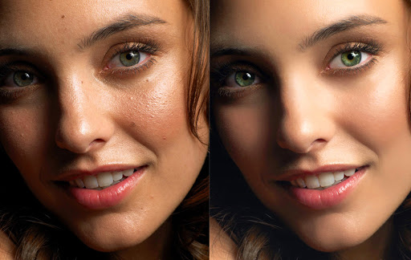
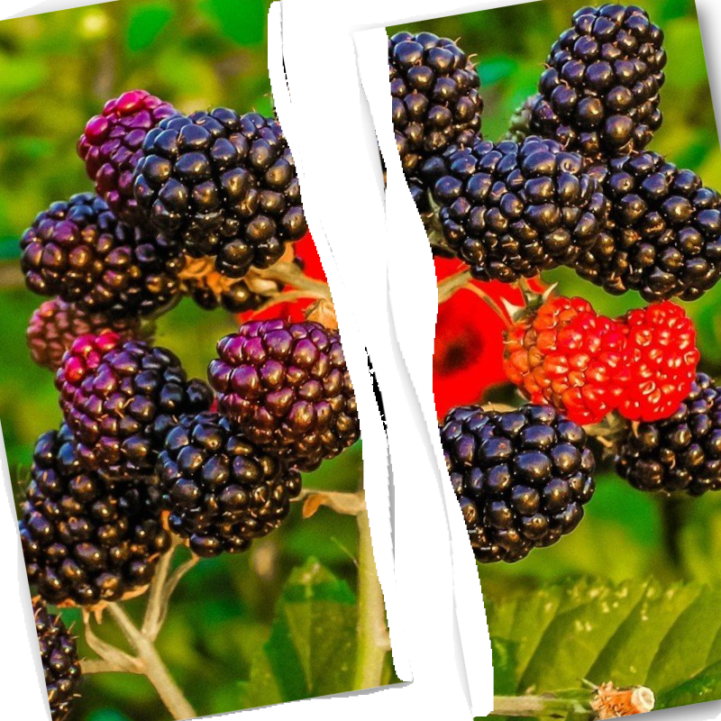
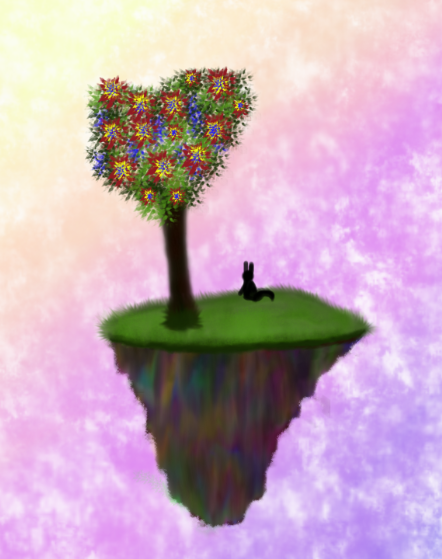
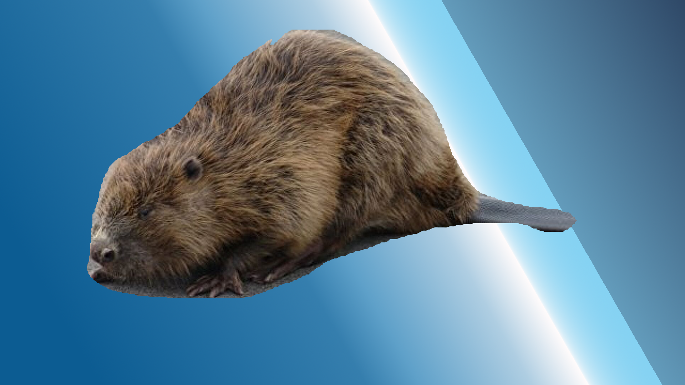
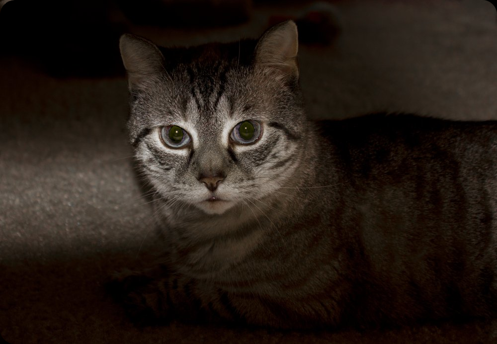
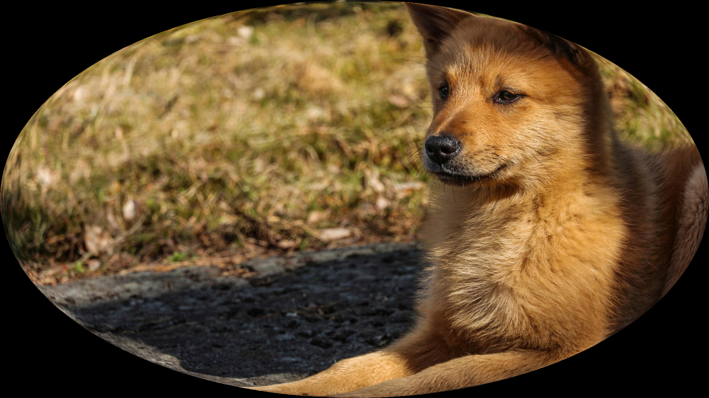
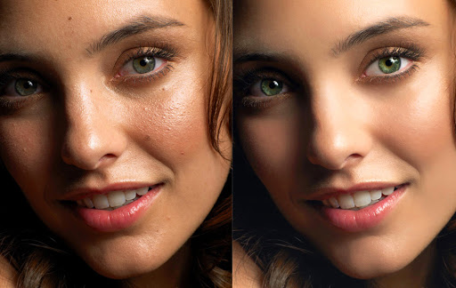
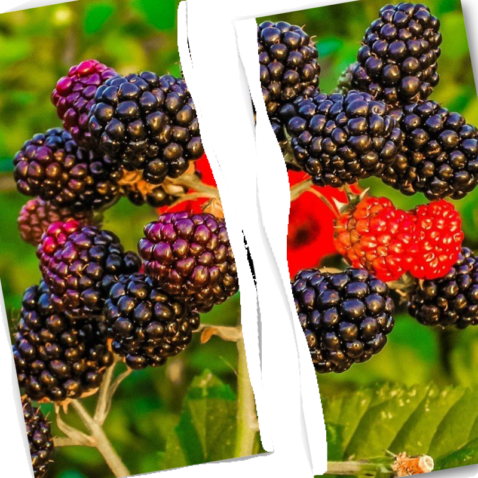
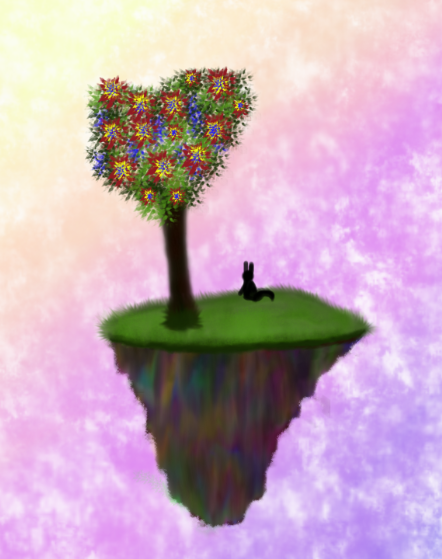
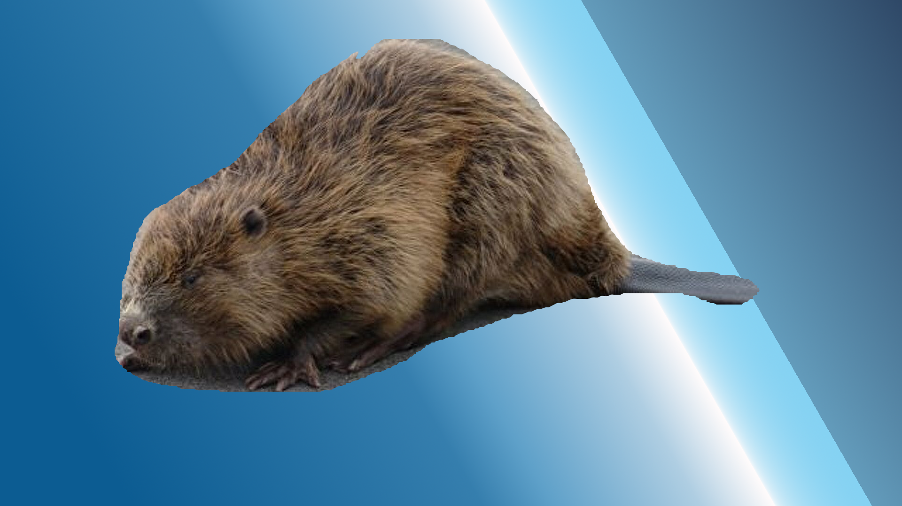
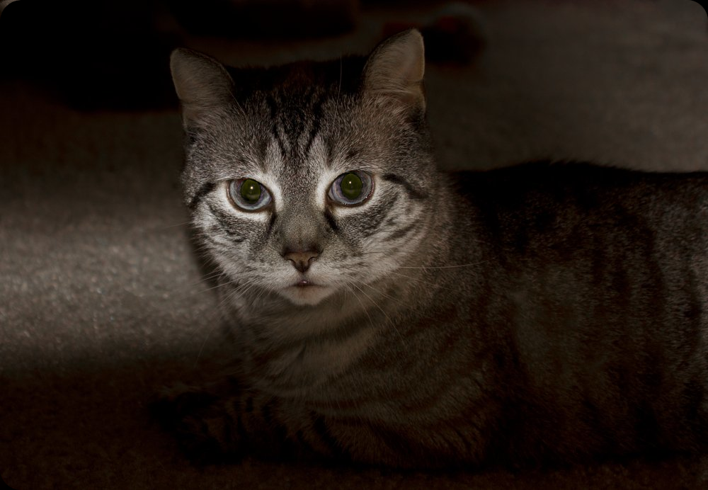
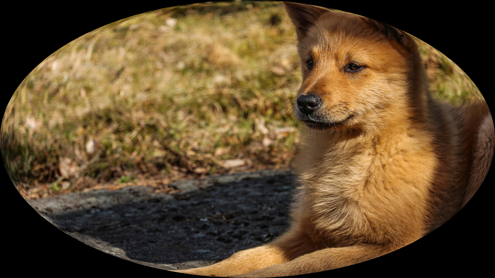


Растровое изображение (лат. rastrum — скребок, грабли) — изображение, представляющее собой сетку (мозаику) пикселей — цветных точек (обычно прямоугольных) на мониторе, бумаге и других отображающих устройствах.
Растровую графику редактируют с помощью растровых графических редакторов. Создаётся растровая графика фотоаппаратами, сканерами, непосредственно в растровом редакторе, а также путём экспорта из векторного редактора или в виде снимков экрана.
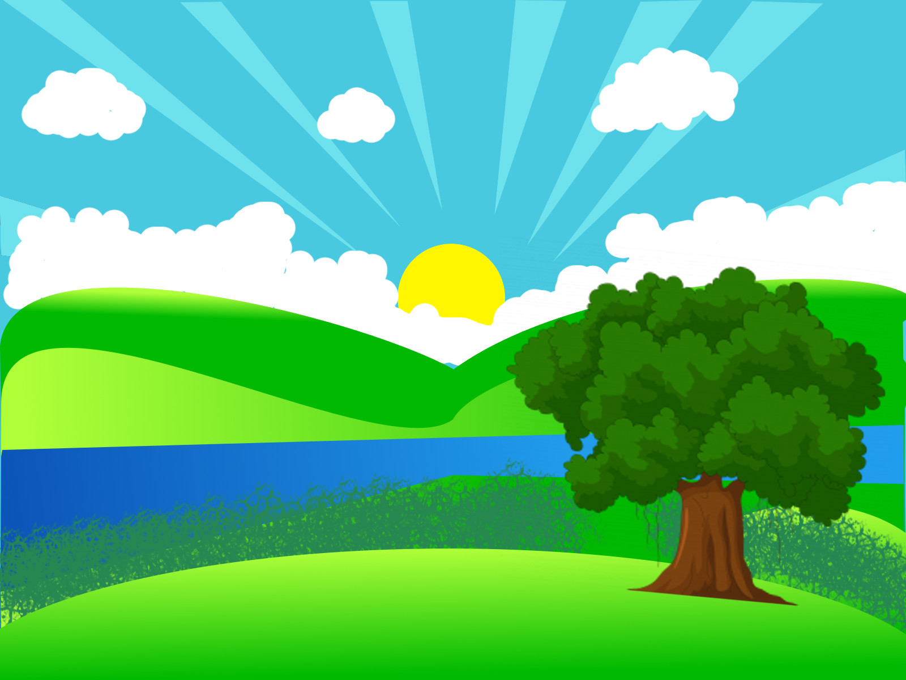
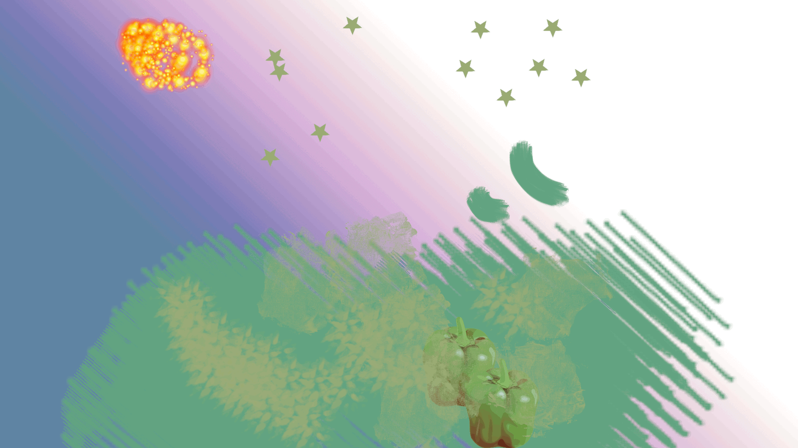
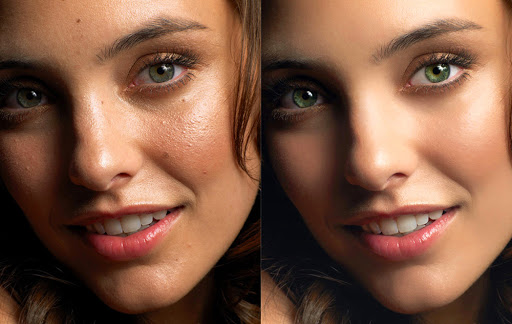
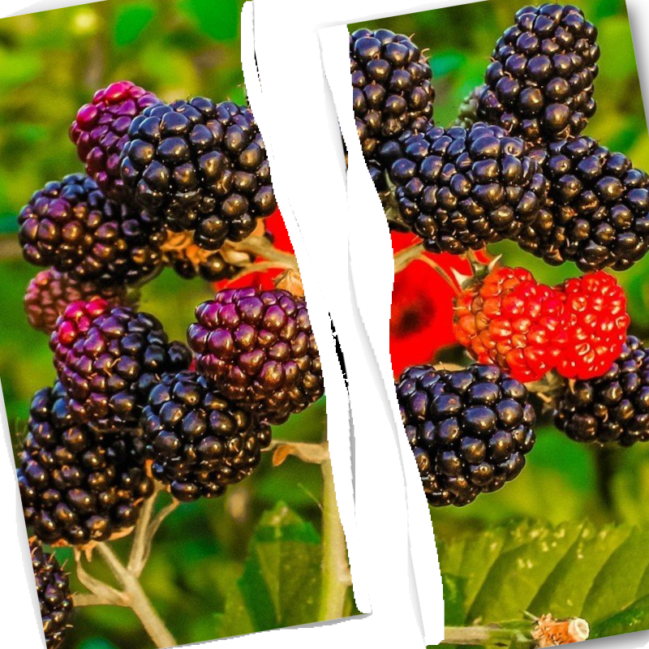
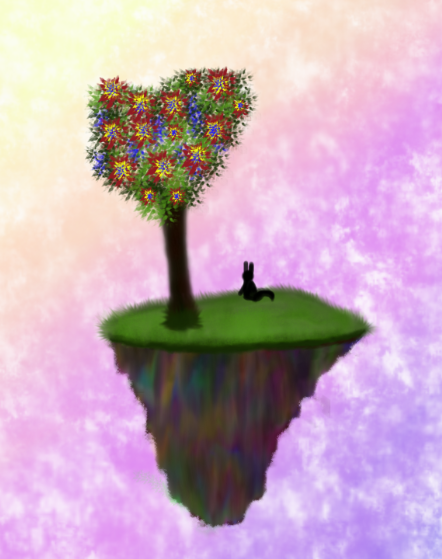
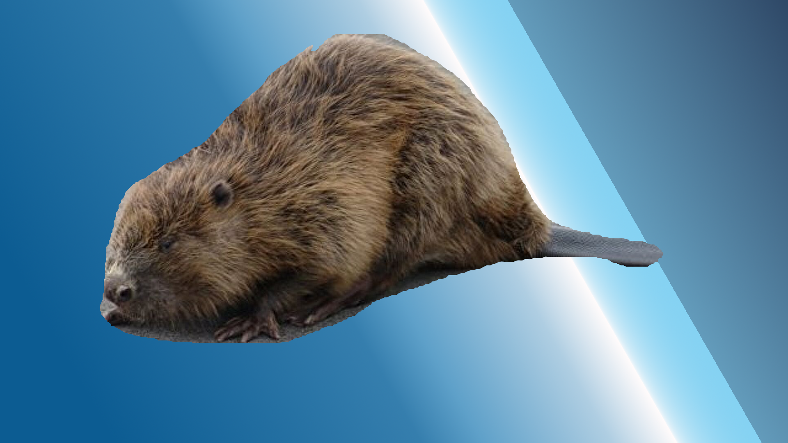
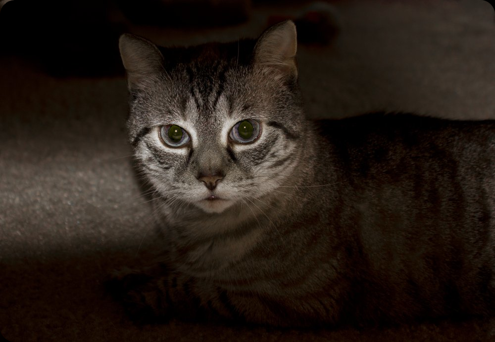
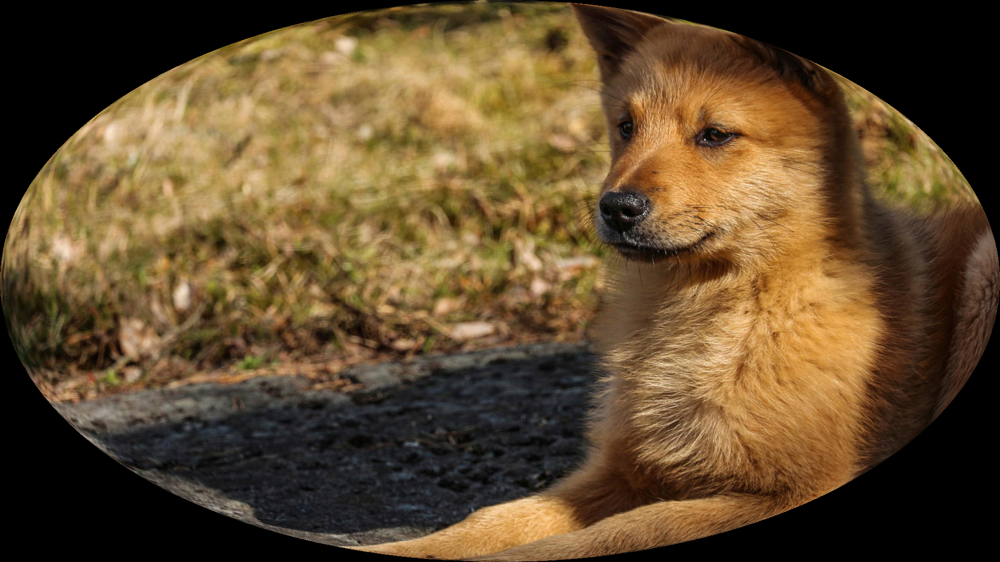